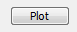
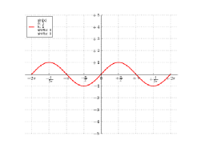
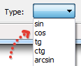
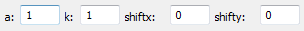
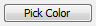
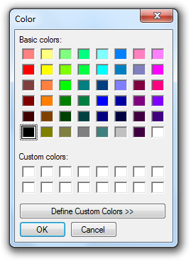
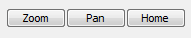
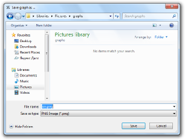

Спрвка по TrigPlot
Добро пожаловть в TrigPlot, прграмму, рисующую тригонометрические функции.
Решение:
- Для того, чтобы построить график, нажмите кнопку Plot

- Программа построит график sin(x) красного цвета по умолчанию

Изменение типа функции:
- Если Вы хотите изменить тип функции с sin(x) на что-нибудь другое, например cos(x), arctg(x), и т.д., Вы можете изменить его в разделе Type

- В данной версии программы (1.5) TrigPlot поддерживает 8 видов тригонометричеких функций:
- sin, cos, tg (tan), ctg (cot)
- arcsin, arccos, arctg (arctan) and arcctg (arccot)
Изменение параметров функции:
- Чтобы изменить праметры функции, измените из значения здесь:

- Всего доступно 4 параметра:
- a - Амплитура
- k - Циклическая частота
- shiftx - Сдвиг по оси OX
- shifty - Сдвиг по оси OY
- Параметры функции также отображены на графике:

Изменение цвета графика:
- Чтобы изменить цвет графика, нажмите на кнопку Pick Color

- Вы можете выбрать один из базовых цветов:

- Или выбрать цвет, который Вам нравится больше, в полноценной RGB палитре:

Навигация по графику:
- Вы можете приближать и двигать свой график, а также вернуться к исходному виду, используя эти кнопки*

Сохранение графика:
- Чтобы сохранить Ваш график, нажмите кнопку Save Graph

- и выберите место для сохранения и имя файла

- В данной версии программы (1.5) TrigPlot поддерживается :
- Изображения PNG (по умолчанию)
Надеемся, Вам понравится использовать TrigPlot!